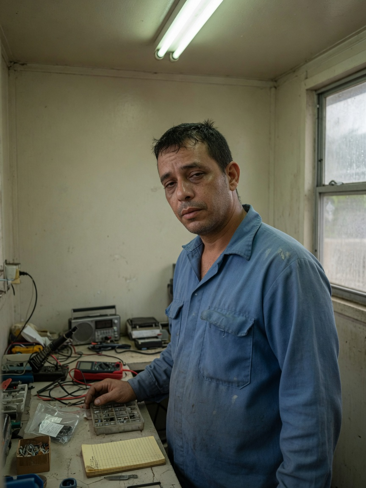
Gabriel Vélez
Communications repairman. Añasco. Introduced by a bench, not a weapon.
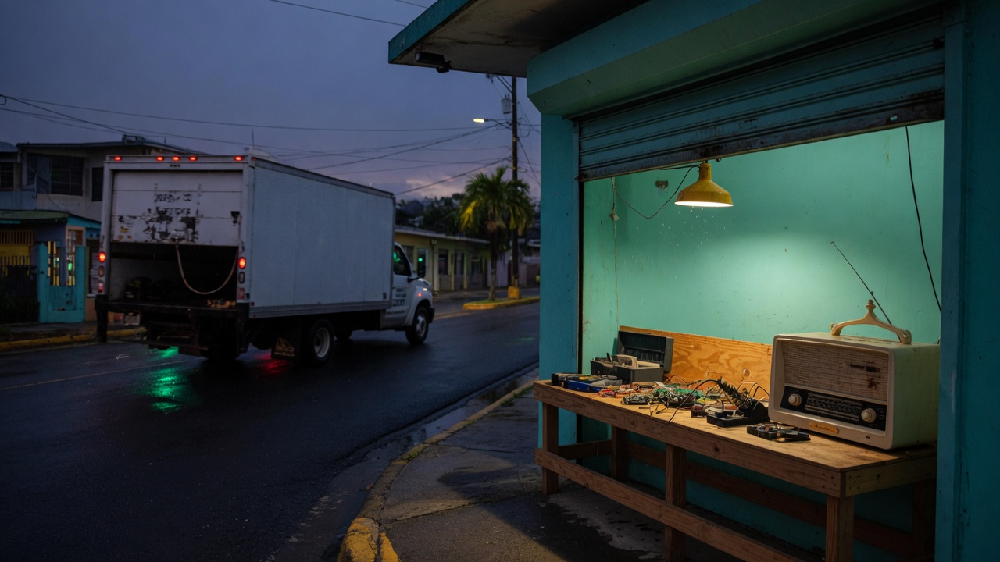
Story · Volume One
La isla recuerda
His mother has been dead for fifteen years. Someone has learned how to make her ask for help.
Radio
Seven cuts from the shop bench. Play them in order, shuffle the set, and turn the volume knob.
Now
0:00 / 0:00
Manga to the lab
The lab is the playable cut: move, stop, earn the shot. The website is the volume — the full story, the stills, the people, the route, and the notes the campaign cannot stop to tell.
Volume One is complete. 9,489 words. Fiction, Puerto Rico, 2032. Interiors are invented. The regions are real. The adaptation bible stays off this site.
Volume One
01 · Añasco
A radio. A call. A name marked complete a day early.
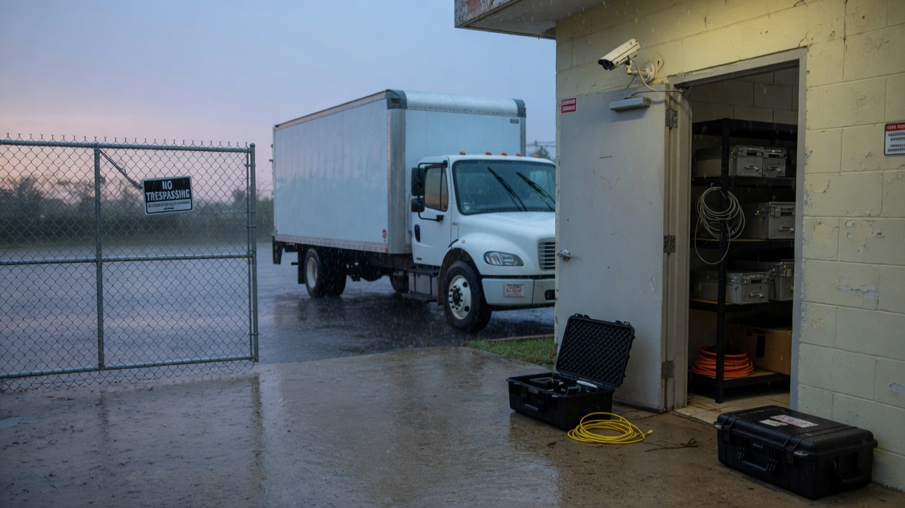
02 · Relay
The station is too quiet. Someone is still inside.
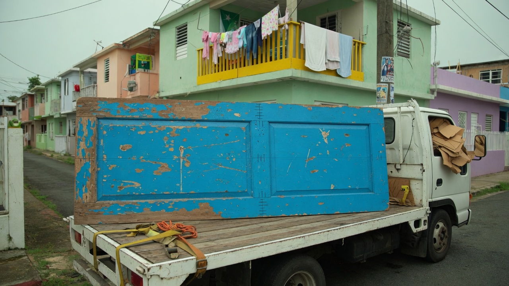
03 · Mayagüez
A reporter, a lawyer, and a door that records a family.
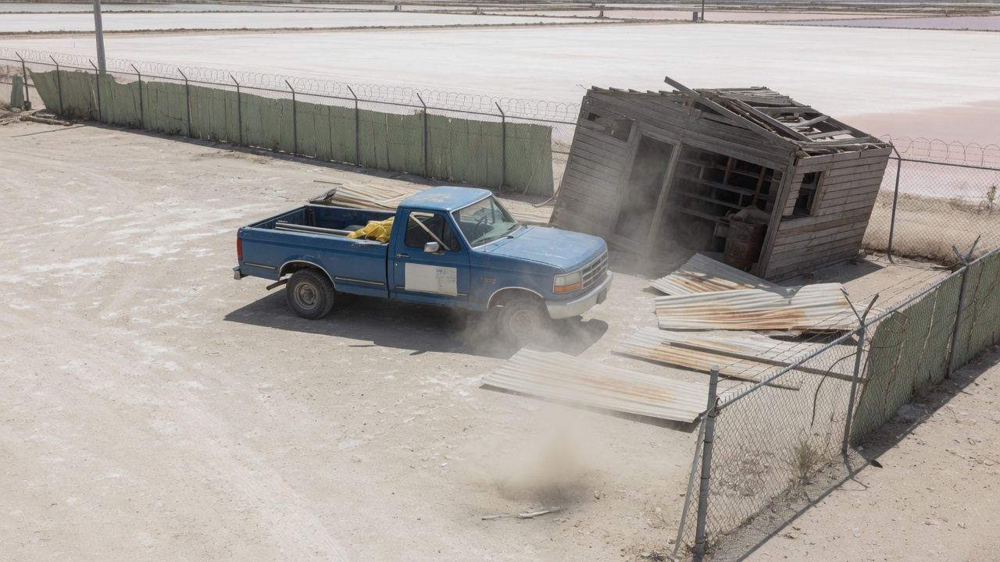
04 · Cabo Rojo
Dry light, a dispatcher, and sheets she signed.
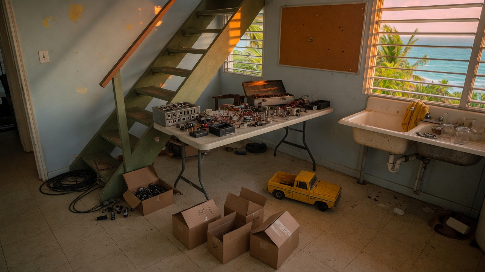
05 · Rincón
A workshop over a kitchen. A voice that knows too much.
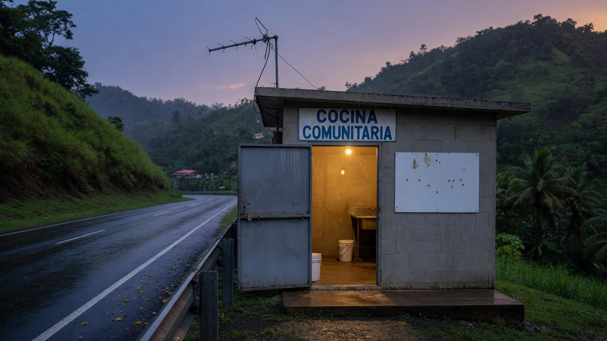
06 · Utuado
A shelter the map declined to support.
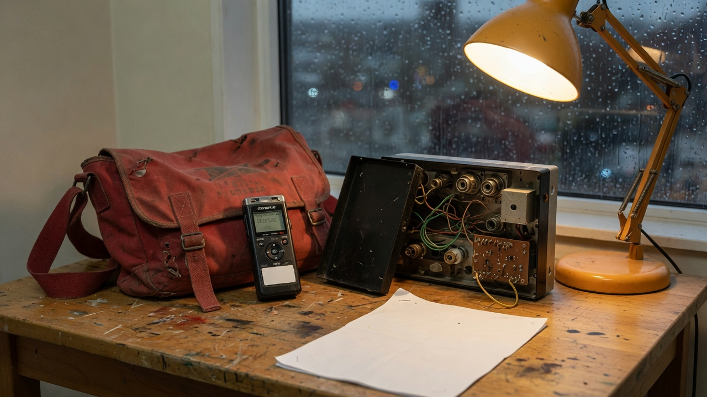
07 · Mountains
Not the shortest route. A day spent keeping context.
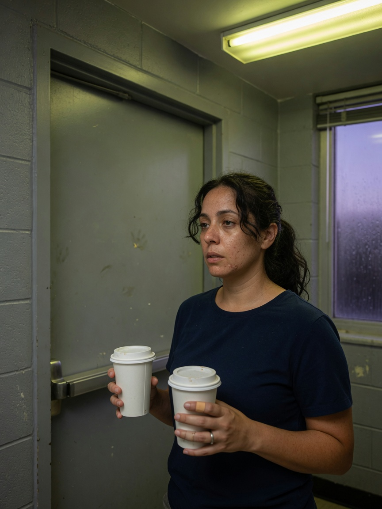
08 · Humacao
A reunion that does not start with forgiveness.
09 · Humacao
Lives that do not fit the fields.
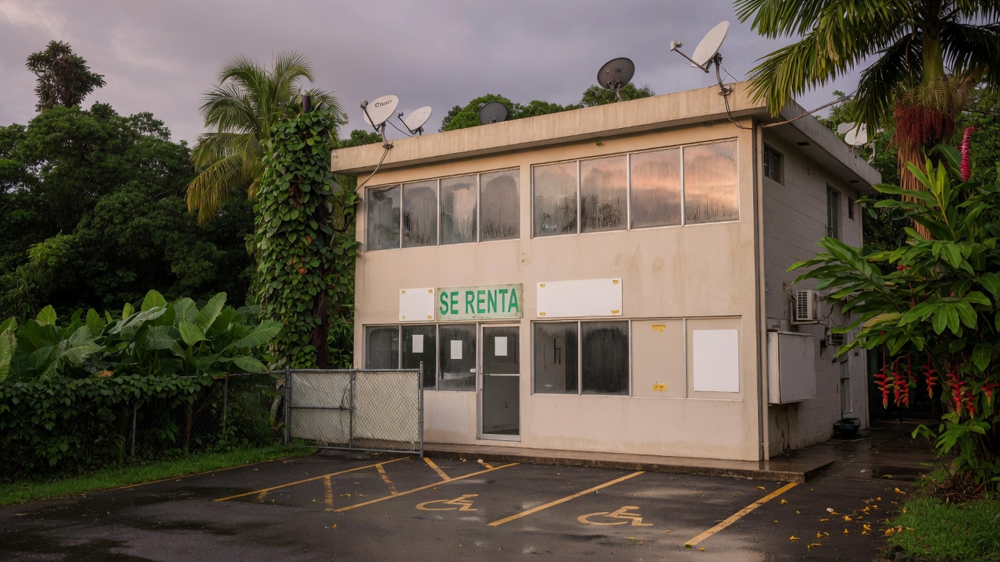
10 · Northeast
A diagnostic window. A building that watches back.
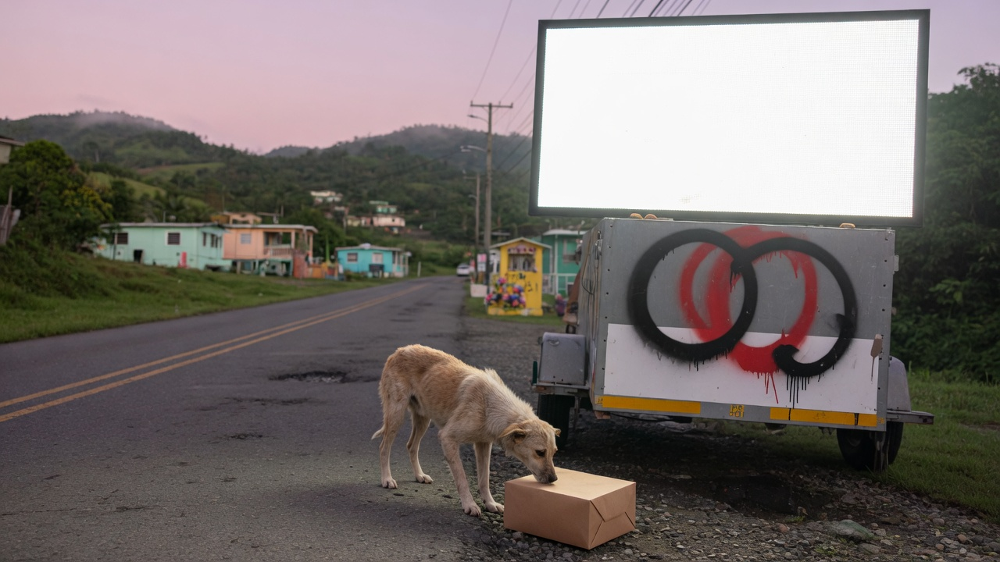
11 · San Juan
What to print. What to protect. What to wait for.
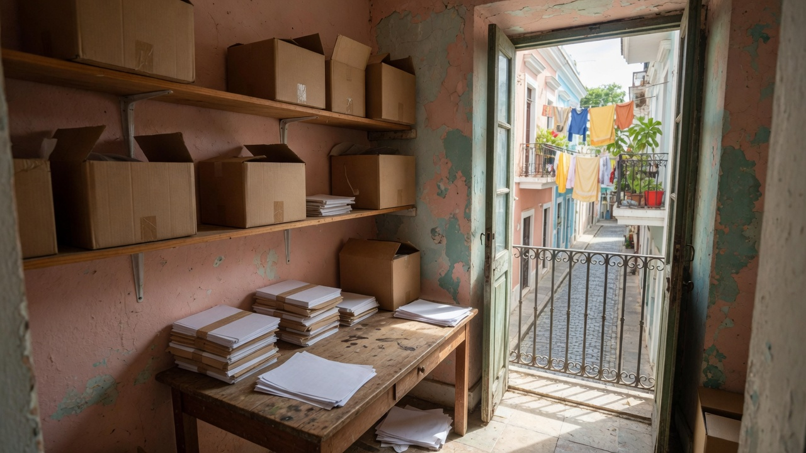
12 · Old San Juan
An archive. A cost that cannot be managed away.
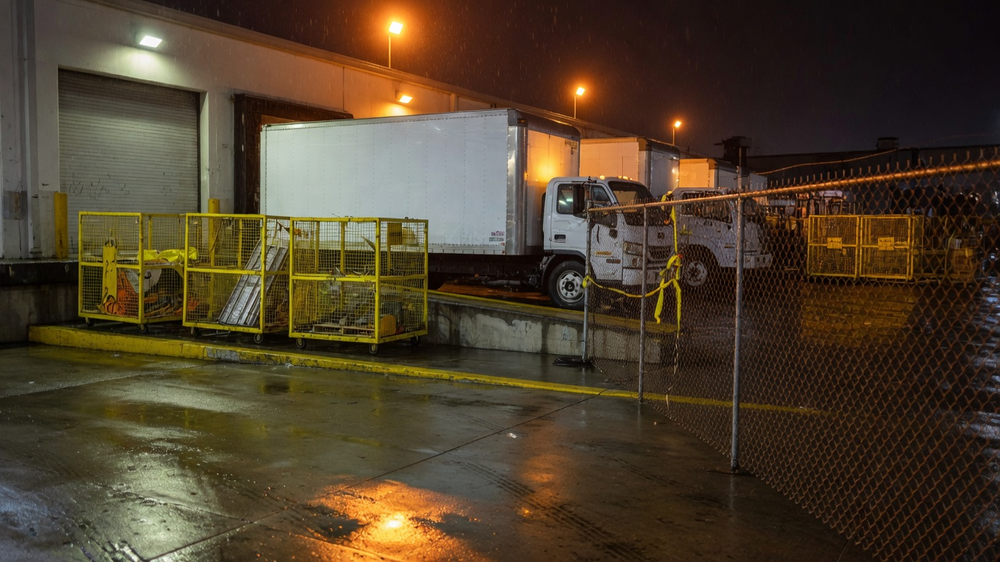
13 · Yard
The yard. The people still inside the work.
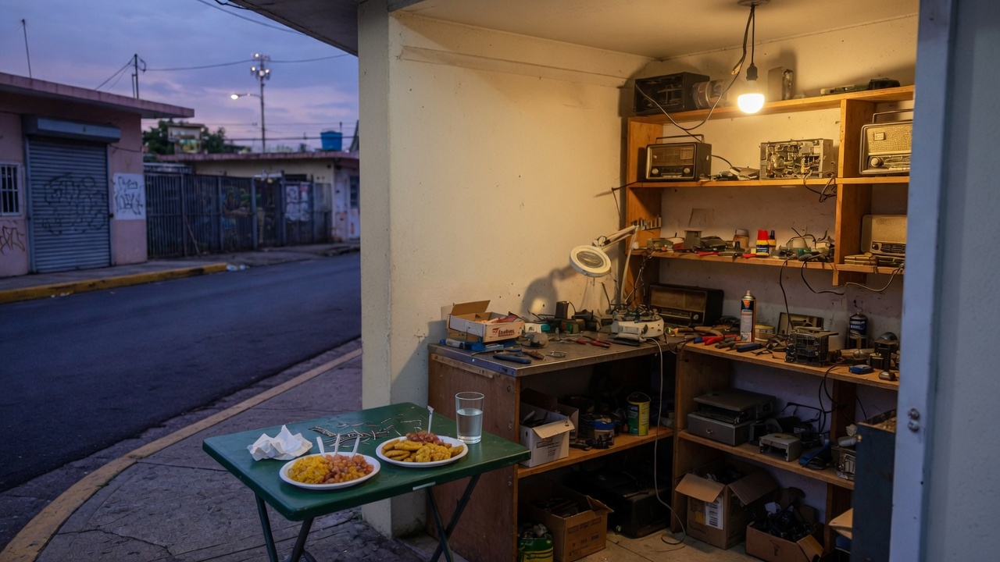
14 · Añasco
What remains. What he can actually fix.
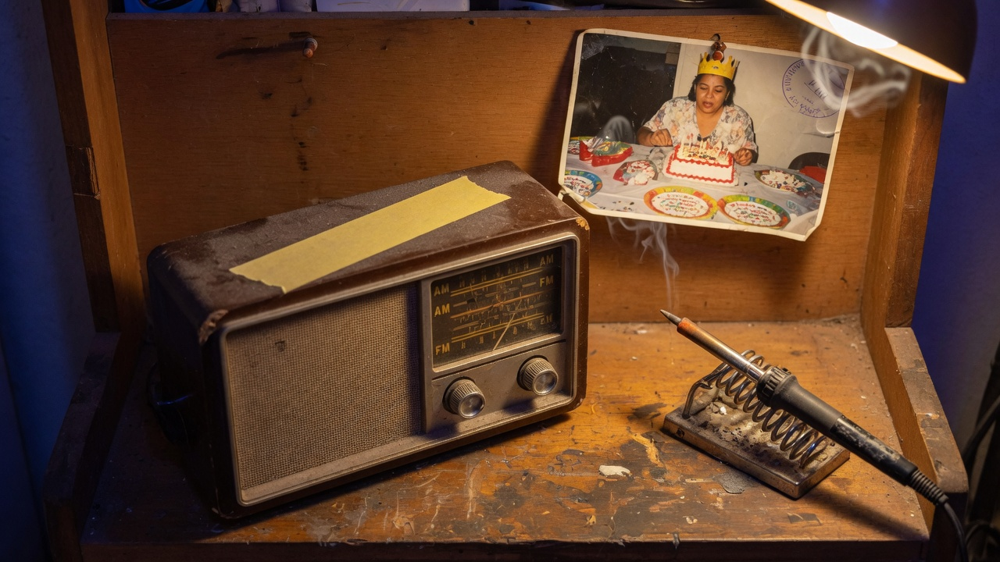
Epilogue · Añasco
A modest broadcast. A table. A message that can wait ten minutes.
People

Communications repairman. Añasco. Introduced by a bench, not a weapon.
Sister. Works with records and routing equipment. Coffee without sugar.
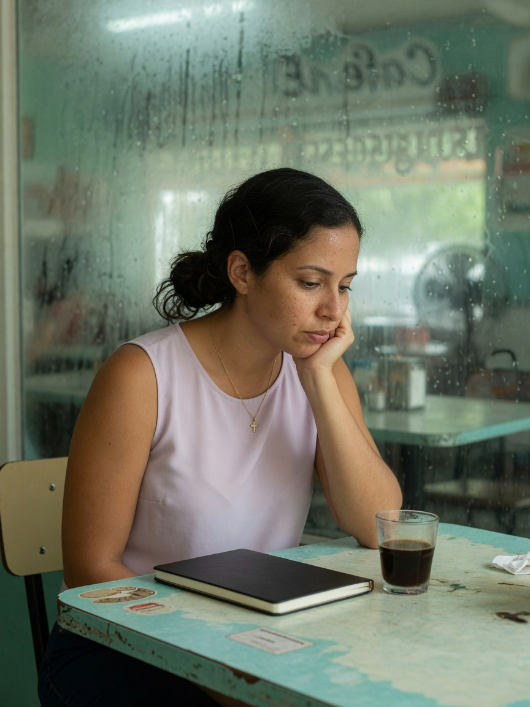
Reporter. Start with what you saw, then what you think.
Island
West coast to southwest to northwest, then the mountains, the east, the northeast, the old city, and home. Schematic. Not a 1:1 reconstruction.
Cuts
Lab pairing
If the lab ships a story mission, the first contract is Dead Air — chapter two’s quiet station. It is not built yet. Request access for the rifle lab. This page is the volume, not a download.
Field notes
Read through the living record or the epilogue. Notes unlock here on this browser.
Copies of the original recording existed before the fire. Other people preserved the evidence. Repair starts with an object between two people. Dinner first. The receiver stays on.
Mission
Ian Ferraro Crespo. Built in Añasco. An original game — not someone else’s overlay.